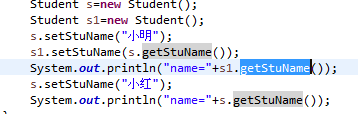

一、将几个数字进行拼接，拼接成字符串
一定要将""放到几个数字之前，否则就会把数字相加之后的数转化成字符串
如你需要拼接年份，月份，和日
如果：2018+12+13+"" 将会转化成 2043的字符串
改正："'+2018+12+13 将会转化成20181213
二、如何随机获得一个范围内的整数如[x，y)
根据左右区间开闭情况，分为以下几种
[x,y) (Math.random()*(y-x)+x)
(x,y] (Math.random()*(y-x)+1+x)
[x,y] 还没想到
三、将一个对象传入方法中，在方法中 对该对象的操作将影响该对象。对象传入相当于指针。
四、格式化时间为的格式字符串大小写是必须严格的，不然肯定会出错
yyyy:年
MM:月
dd:日
hh:12小时制
HH:24小时制
mm:分
ss:秒
S：毫秒
五、关于通过映射给两个对象中相同名称属性赋值的问题 public static void Copy(Object source, Object dest)throws Exception {
BeanInfo sourceBean = Introspector.getBeanInfo(source.getClass(), java.lang.Object.class);
PropertyDescriptor[] sourceProperty = sourceBean.getPropertyDescriptors();
BeanInfo destBean = Introspector.getBeanInfo(dest.getClass(), java.lang.Object.class);
PropertyDescriptor[] destProperty = destBean.getPropertyDescriptors();
try{
for(int i=0;i<sourceProperty.length;i++){
for(int j=0;j<destProperty.length;j++){
if(sourceProperty[i].getName().equals(destProperty[j].getName())){
if (!sourceProperty[i].getName().equals("class")) {
destProperty[j].getWriteMethod().invoke(dest, sourceProperty[i].getReadMethod().invoke(source));
break;
}
}
}
}
}catch(Exception e){
e.printStackTrace();
}
}
}
通过测试发现，在两个类中有一个相同属性，class.但是class并没有get、set方法，导致方法报错，在程序中多加一个判断条件，即可完成本功能
六、新导入一个项目，类中不报错，项目有红叉号的解决方法：右击项目->buildpath->瞎几吧乱选，看有没有那种红叉的删掉试试
七、在项目中遇到的一个有意思的代码
代码一、
for(Menu m:fatherMenu){
//将父亲节点信息放到menuTree中
MenuTree mt=new MenuTree();
mt.setMenuId(m.getMenuId());
mt.setMenuName(m.getMenuName());
mt.setChildList(map.get(m.getMenuId()));
treeList.add(mt);
}
代码二、
MenuTree mt=new MenuTree();
for(Menu m:fatherMenu){
//将父亲节点信息放到menuTree中
mt.setMenuId(m.getMenuId());
mt.setMenuName(m.getMenuName());
mt.setChildList(map.get(m.getMenuId()));
treeList.add(mt);
}
这两段代码的区别就是把MenuTree mt=new MenuTree()放到循环里面和循环外面的区别，但是这两个的执行结果却是完全不同的
第一段代码执行完毕之后放入treeList中的三个东西是不同的，但是第二段代码执行完毕之后放入treeList中的三个东西却是完全一样的，这就导致了错误的发生。
错误的原因：MenuTree类型的对象是一个地址，而这个地址中的属性也会分配一定的内存空间，m.getMenuId(),m.getMenuName()得到的应该是这个三个属性存放的地址，当mt这个变量中的内容发生了变化时，那么地址中的内容也就变化了，导致以前添加的也就改变了。总的来说，set方法设置的不是一个值，而是一个对象。当这个对象改变的时候，引用这个对象的东东也会变化。地址共用了。可能String的值设置成final类型就是这种原因吧，只要当前地址设置为一个值，就不会改变，避免其他引用炸了。。。。

这段代码也是同样的道理。以后写代码的时候一定要这一这种问题。